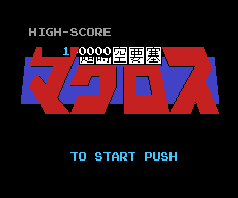

Macross - Nintendo Games

Controls
- A button: Change Valkyrie Form
- B button: Fire Gun
- Start: Pause
- Select: Fire Missles
You pilot your Valkyrie as you blast countless swarms of enemy ships. To change the form of your
Valkyrie, press the A button + Up/Left/Right.
Anime Video Game Resource Center © 1998 by Luis A. Cruz